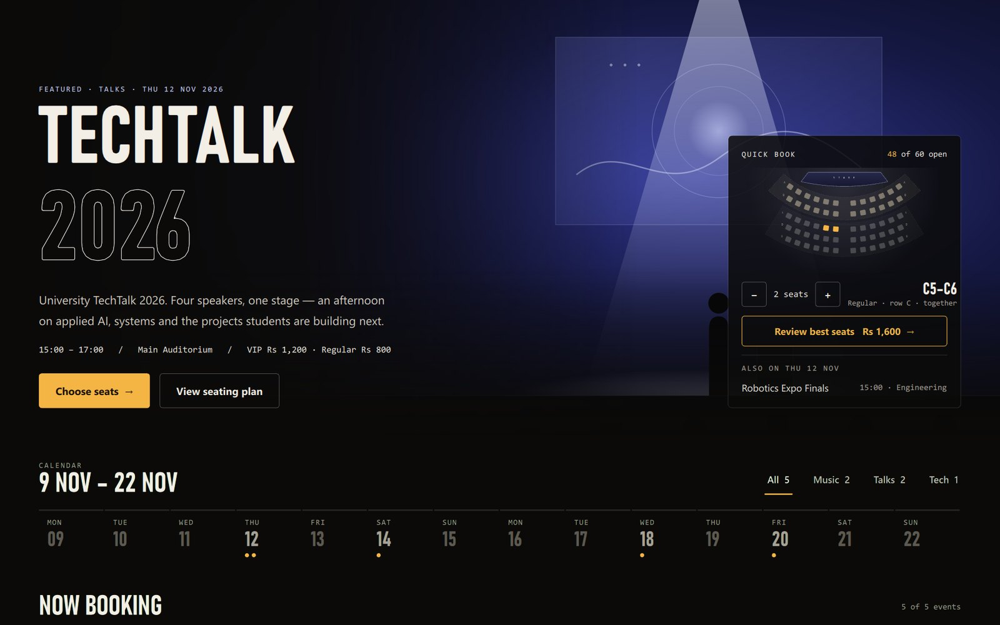
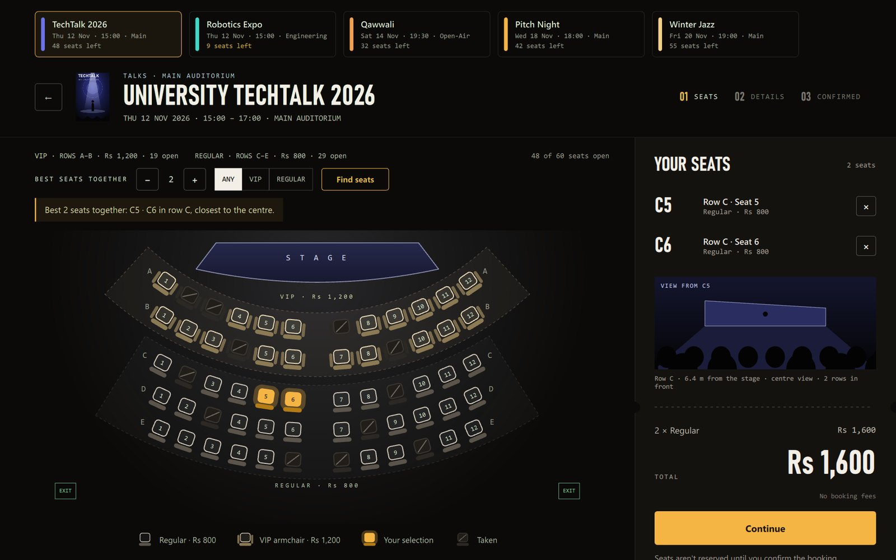
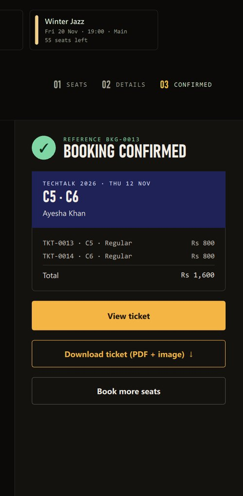
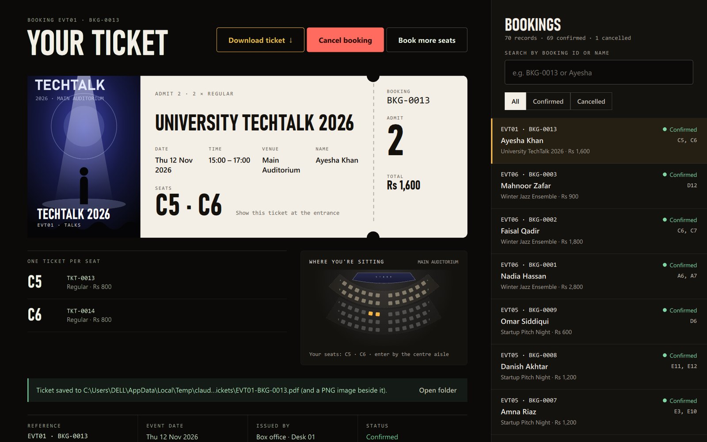
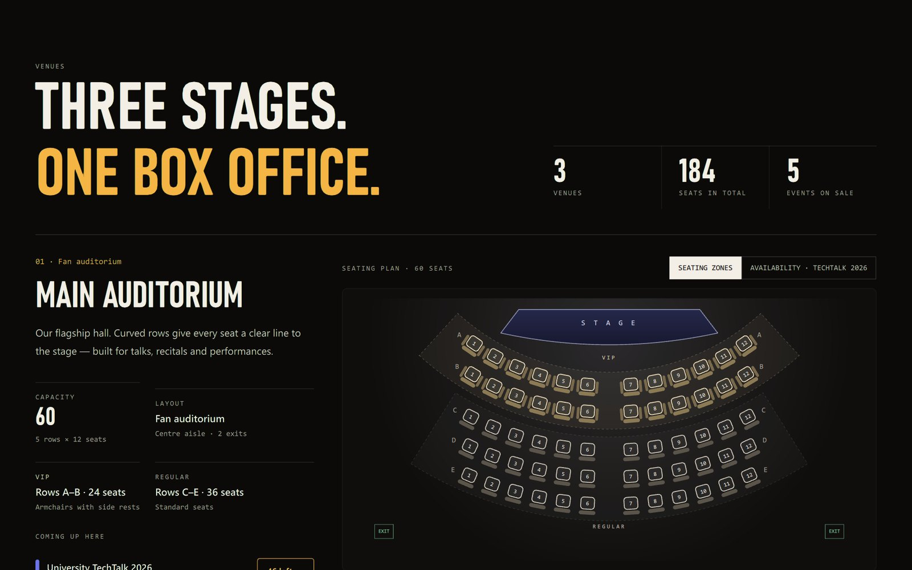
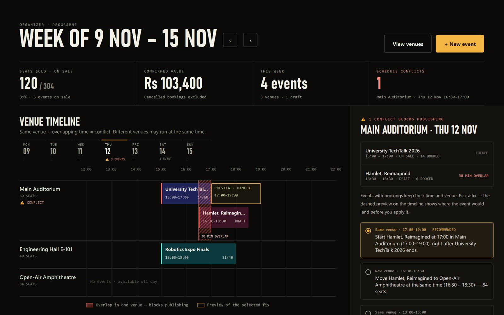

<title>SeatCraft Setup Guide</title>
<meta name="claude:viewport-fit-sides" content="cover">
<link rel="stylesheet" href="https://fonts.googleapis.com/css2?family=Big+Shoulders+Display:wght@700;800;900&family=Instrument+Sans:wght@400;500;600;700&family=IBM+Plex+Mono:wght@400;500&display=swap">
<style>
/* Layout: one reading column with a sticky section bar; screenshots beside steps on wide screens, stacked on phones.
   Single committed look (the app's own Marquee palette), dark only. */
:root {
  --bg: #0B0A09; --panel: #14120F; --line: #2C2924; --ink: #F3EEE6; --soft: #D8D1C5; --muted: #A8A196;
  --amber: #F5B544; --ice: #C9D2FF; --ok: #7FD6A4; --warn: #FF8A7E;
  --display: "Big Shoulders Display", "Bahnschrift", "Arial Narrow", sans-serif;
  --body: "Instrument Sans", "Segoe UI", Arial, sans-serif;
  --mono: "IBM Plex Mono", Consolas, "Courier New", monospace;
  color-scheme: dark;
}
* { box-sizing: border-box; }
body { background: var(--bg); color: var(--ink); font: 16px/1.6 var(--body); margin: 0; }
body::before { content: ""; position: fixed; inset: 0 0 auto; height: env(safe-area-inset-top, 0px); z-index: 10; background: var(--bg); }
.wrap { max-width: 1120px; margin: 0 auto; padding-left: max(16px, env(safe-area-inset-left, 0px)); padding-right: max(16px, env(safe-area-inset-right, 0px)); }
a { color: var(--amber); }
a:focus-visible, button:focus-visible { outline: 2px solid var(--amber); outline-offset: 3px; }
h1, h2, h3 { text-wrap: balance; margin: 0; }
.eyebrow { font: 500 12px/1 var(--mono); letter-spacing: .18em; text-transform: uppercase; color: var(--amber); }
.display { font-family: var(--display); font-weight: 900; text-transform: uppercase; line-height: .9; letter-spacing: .01em; }
p { margin: 0; }
code, .mono { font-family: var(--mono); font-size: .92em; }

/* nav */
nav.bar { position: sticky; top: env(safe-area-inset-top, 0px); z-index: 5; background: rgba(11,10,9,.94); border-bottom: 1px solid var(--line); backdrop-filter: blur(6px); }
nav.bar .wrap { display: flex; gap: 22px; align-items: center; overflow-x: auto; padding-block: 12px; scrollbar-width: none; }
nav.bar .brand { font: 900 22px/1 var(--display); letter-spacing: .12em; white-space: nowrap; }
nav.bar .brand span { color: var(--amber); }
nav.bar a { color: var(--soft); text-decoration: none; font-weight: 600; font-size: 14px; white-space: nowrap; }
nav.bar a:hover { color: var(--ink); }

/* hero */
header.hero { padding-block: 72px 56px; border-bottom: 1px solid var(--line); }
.hero h1 { font-size: clamp(56px, 11vw, 132px); margin-top: 14px; }
.hero h1 em { font-style: normal; color: var(--amber); }
.hero .lede { font-size: 20px; color: var(--soft); max-width: 62ch; margin-top: 22px; }
.steps3 { display: grid; grid-template-columns: repeat(3, minmax(0,1fr)); gap: 0; margin-top: 44px; border-top: 2px solid var(--line); }
.steps3 > div { padding: 22px 22px 6px 0; min-width: 0; }
.steps3 > div + div { border-left: 1px solid var(--line); padding-left: 22px; }
.steps3 b { display: block; font: 900 56px/1 var(--display); color: var(--amber); }
.steps3 h3 { font: 700 22px/1.2 var(--body); margin-top: 10px; }
.steps3 p { color: var(--muted); margin-top: 6px; }
.chips { display: flex; flex-wrap: wrap; gap: 10px; margin-top: 30px; }
.chip { font: 500 13px/1 var(--mono); padding: 9px 12px; border: 1px solid var(--line); border-radius: 99px; color: var(--soft); }

section.block { padding-block: 64px; border-bottom: 1px solid var(--line); }
section.block > .wrap > h2 { font-size: clamp(40px, 6vw, 64px); margin-top: 12px; }
section.block > .wrap > .intro { color: var(--soft); font-size: 18px; max-width: 64ch; margin-top: 14px; }

/* editions */
.two { display: grid; grid-template-columns: repeat(2, minmax(0,1fr)); gap: 20px; margin-top: 32px; }
.card { background: var(--panel); border: 1px solid var(--line); border-radius: 12px; padding: 26px; min-width: 0; }
.card.hot { border-color: var(--amber); }
.card h3 { font: 900 40px/1 var(--display); text-transform: uppercase; margin-top: 8px; }
.card p { color: var(--soft); margin-top: 10px; }
.card .file { font: 500 14px var(--mono); color: var(--ok); }
.card.hot .file { color: var(--amber); }

/* tree */
pre.tree { background: var(--panel); border: 1px solid var(--line); border-radius: 12px; padding: 22px 24px; overflow-x: auto; font: 14px/1.7 var(--mono); color: var(--soft); margin: 28px 0 0; }
pre.tree .k { color: var(--amber); }
pre.tree .c { color: var(--muted); }

/* table */
.tablebox { overflow-x: auto; margin-top: 28px; border: 1px solid var(--line); border-radius: 12px; }
table { width: 100%; border-collapse: collapse; min-width: 560px; }
th, td { text-align: left; padding: 14px 18px; border-bottom: 1px solid var(--line); vertical-align: top; }
th { font: 500 12px var(--mono); letter-spacing: .14em; text-transform: uppercase; color: var(--muted); background: var(--panel); }
tr:last-child td { border-bottom: 0; }
td.res { color: var(--ok); }

/* feature tour */
.feature { display: grid; grid-template-columns: minmax(0, 1.45fr) minmax(0, 1fr); gap: 36px; align-items: start; padding-block: 44px; border-top: 1px solid var(--line); }
.feature:first-of-type { border-top: 0; }
.feature figure { margin: 0; }
.feature img { width: 100%; border-radius: 10px; border: 1px solid var(--line); display: block; background: var(--panel); }
.feature figcaption { font: 13px var(--mono); color: var(--muted); margin-top: 8px; }
.feature .num { font: 500 13px var(--mono); color: var(--amber); letter-spacing: .14em; }
.feature h3 { font: 900 40px/1 var(--display); text-transform: uppercase; margin-top: 8px; }
.feature .for { color: var(--soft); margin-top: 12px; }
.feature ol { margin: 16px 0 0; padding-left: 22px; display: grid; gap: 8px; }
.feature li::marker { color: var(--amber); font-family: var(--mono); }
.tip { margin-top: 16px; padding: 12px 14px; border-left: 2px solid var(--ice); background: #12141F; color: var(--soft); font-size: 15px; }

/* commands */
.cmd { display: flex; gap: 12px; align-items: center; background: var(--panel); border: 1px solid var(--line); border-radius: 10px; padding: 12px 12px 12px 18px; margin-top: 10px; min-width: 0; }
.cmd code { flex: 1; overflow-x: auto; white-space: nowrap; color: var(--ink); }
.cmd button { flex: none; font: 600 13px var(--body); color: var(--bg); background: var(--amber); border: 0; border-radius: 6px; padding: 8px 12px; cursor: pointer; }
.cmd button.done { background: var(--ok); }
.buildsteps { display: grid; gap: 26px; margin-top: 32px; counter-reset: s; }
.buildsteps > div { min-width: 0; }
.buildsteps h3 { font: 700 20px var(--body); }
.buildsteps h3::before { counter-increment: s; content: counter(s) " · "; color: var(--amber); font-family: var(--mono); }
.buildsteps p { color: var(--soft); margin-top: 6px; }

.faq { display: grid; gap: 14px; margin-top: 28px; }
.faq details { background: var(--panel); border: 1px solid var(--line); border-radius: 10px; padding: 16px 20px; }
.faq summary { font-weight: 700; cursor: pointer; }
.faq details p { color: var(--soft); margin-top: 10px; }

footer { padding-block: 48px 64px; color: var(--muted); font-size: 14px; }

@media (max-width: 760px) {
  .steps3, .two, .feature { grid-template-columns: minmax(0,1fr); }
  .steps3 > div + div { border-left: 0; padding-left: 0; border-top: 1px solid var(--line); }
}
@media (prefers-reduced-motion: no-preference) { html { scroll-behavior: smooth; } }
</style>

<nav class="bar" aria-label="Sections">
  <div class="wrap">
    <span class="brand">SEAT<span>CRAFT</span></span>
    <a href="#start">Quick start</a>
    <a href="#editions">Editions</a>
    <a href="#package">What’s in the zip</a>
    <a href="#features">Features</a>
    <a href="#test">Test it</a>
    <a href="#build">Build from source</a>
    <a href="#help">Help</a>
  </div>
</nav>

<header class="hero" id="start">
  <div class="wrap">
    <p class="eyebrow">Setup guide · version 1.0</p>
    <h1 class="display">Run SeatCraft<br>in <em>60 seconds</em>.</h1>
    <p class="lede">SeatCraft is a desktop box office for campus events: discover events, pick seats on a real venue map, confirm a booking, download the ticket, and schedule events without clashes. It runs offline on Windows. Nothing to install.</p>
    <div class="steps3">
      <div><b>1</b><h3>Unzip</h3><p>Right-click <code>SeatCraft-v1.0.zip</code> › Extract All, to any folder.</p></div>
      <div><b>2</b><h3>Open App</h3><p>Go into <code>SeatCraft-v1.0\App</code>.</p></div>
      <div><b>3</b><h3>Double-click</h3><p><code>SeatCraft-Demo.exe</code> to explore with sample data, or <code>SeatCraft.exe</code> to start clean.</p></div>
    </div>
    <div class="chips" aria-label="Requirements">
      <span class="chip">Windows 10 or 11 · 64-bit</span>
      <span class="chip">≈ 80 MB disk</span>
      <span class="chip">No install</span>
      <span class="chip">No internet</span>
      <span class="chip">No database</span>
      <span class="chip">Screen 1280 × 760 or larger</span>
    </div>
  </div>
</header>

<section class="block" id="editions">
  <div class="wrap">
    <p class="eyebrow">Two editions</p>
    <h2 class="display">Pick how you want to start</h2>
    <p class="intro">Both are the same program. They keep separate data, so trying the demo never touches real bookings.</p>
    <div class="two">
      <div class="card hot">
        <p class="file">SeatCraft-Demo.exe</p>
        <h3>Demo</h3>
        <p>Opens with six sample events across three venues, 118 seats already booked, a cancelled booking and one schedule clash to fix. Best for exploring and testing every feature.</p>
      </div>
      <div class="card">
        <p class="file">SeatCraft.exe</p>
        <h3>Production</h3>
        <p>Opens clean: the three venues are ready, with no events or bookings. Add your first event in the Organizer, publish it, and start booking.</p>
      </div>
    </div>
    <div class="tablebox">
      <table>
        <tr><th>Edition</th><th>Where its data is saved</th></tr>
        <tr><td>Demo</td><td class="mono">%APPDATA%\SeatCraft\SeatCraft\Demo\seatcraft.txt</td></tr>
        <tr><td>Production</td><td class="mono">%APPDATA%\SeatCraft\SeatCraft\Production\seatcraft.txt</td></tr>
        <tr><td>Downloaded tickets</td><td class="mono">Downloads\SeatCraft Tickets\</td></tr>
      </table>
    </div>
  </div>
</section>

<section class="block" id="package">
  <div class="wrap">
    <p class="eyebrow">What’s in the zip</p>
    <h2 class="display">Everything, in three folders</h2>
<pre class="tree"><span class="k">SeatCraft-v1.0\</span>
├─ README-FIRST.txt              <span class="c">quick start in five lines</span>
├─ <span class="k">App\</span>                        <span class="c">ready to run, no install</span>
│  ├─ SeatCraft-Demo.exe        <span class="c">Demo edition (sample data)</span>
│  ├─ SeatCraft.exe             <span class="c">Production edition (starts clean)</span>
│  ├─ seatcraft_cli.exe         <span class="c">terminal version of the box office</span>
│  ├─ seatcraft_tests.exe       <span class="c">75 automated acceptance checks</span>
│  └─ Qt libraries, qml\, platforms\ …   <span class="c">leave these beside the .exe files</span>
├─ <span class="k">Source\</span>                     <span class="c">full C++ / QML project</span>
│  ├─ src\core\  src\app\  src\cli\  qml\  assets\  tests\
│  ├─ CMakeLists.txt  build.bat  Makefile  README.md
│  └─ Event_Seat_Booking_Stakeholder_Brief.pdf
└─ <span class="k">Docs\</span>
   ├─ SeatCraft-Setup-Guide.html   <span class="c">this guide, offline</span>
   ├─ SeatCraft-Product-Showcase-v2.mp4  <span class="c">65-second product film (1080p, voiceover)</span>
   ├─ SeatCraft-Product-Showcase-v2.srt  <span class="c">captions for the film</span>
   ├─ Film-Source\               <span class="c">editable film source and audio stems</span>
   └─ Links.txt                    <span class="c">online presentation and guide</span></pre>
  </div>
</section>

<section class="block" id="features">
  <div class="wrap">
    <p class="eyebrow">Feature tour</p>
    <h2 class="display">Every screen, and how to use it</h2>
    <p class="intro">The top bar has four tabs — Discover, Bookings, Venues and Organizer. Seat selection opens from any event.</p>

    <div class="feature">
      <figure><figcaption>Discover · Demo edition</figcaption></figure>
      <div>
        <p class="num">SCREEN 1</p>
        <h3>Discover</h3>
        <p class="for">The home screen: the next event is featured, and every event on sale has a poster with live availability.</p>
        <ol>
          <li><b>Quick book:</b> use − / + to choose how many seats; the mini map highlights the best seats together.</li>
          <li><b>Calendar:</b> click a day to show only its events; click again to clear.</li>
          <li><b>Category tabs:</b> filter by Talks, Music, Tech and so on.</li>
          <li>Click a <b>poster</b> or <b>Choose seats</b> to open seat selection.</li>
        </ol>
      </div>
    </div>

    <div class="feature">
      <figure><figcaption>Seat selection · Main Auditorium</figcaption></figure>
      <div>
        <p class="num">SCREEN 2</p>
        <h3>Seat selection</h3>
        <p class="for">Pick seats on a map drawn to the venue’s real shape, with stage, aisles, rows and exits.</p>
        <ol>
          <li>Switch events with the cards at the top.</li>
          <li>Click open seats to select them. Armchairs are VIP; struck-through seats are taken.</li>
          <li>Or set a number, choose Any / VIP / Regular and press <b>Find seats</b>.</li>
          <li>Hover a seat to see the <b>view from that seat</b>. The total updates as you go.</li>
          <li>Press <b>Continue</b>.</li>
        </ol>
        <p class="tip">Seats aren’t reserved until the booking is confirmed.</p>
      </div>
    </div>

    <div class="feature">
      <figure><figcaption>Booking confirmed</figcaption></figure>
      <div>
        <p class="num">SCREEN 2 · CONTINUED</p>
        <h3>Confirm &amp; download</h3>
        <p class="for">Finish the booking and get the ticket as a file.</p>
        <ol>
          <li>Type the <b>customer name</b> and press <b>Confirm booking</b>.</li>
          <li>You get a booking reference (for example BKG-0013) and one ticket per seat.</li>
          <li>Press <b>Download ticket (PDF + image)</b>. Both files are saved to <code>Downloads\SeatCraft Tickets</code>; use <b>Open folder</b> to find them.</li>
        </ol>
        <p class="tip">Names can’t contain “|” or line breaks — the app tells you if one does.</p>
      </div>
    </div>

    <div class="feature">
      <figure><figcaption>Bookings</figcaption></figure>
      <div>
        <p class="num">SCREEN 3</p>
        <h3>Bookings</h3>
        <p class="for">Find any booking, see it as a ticket, download it again, or cancel it.</p>
        <ol>
          <li>Search by booking ID, customer name or event in the right-hand list.</li>
          <li>Filter All / Confirmed / Cancelled.</li>
          <li>Click a booking to show its ticket and seat locator.</li>
          <li><b>Download ticket</b> saves the PDF and PNG.</li>
          <li><b>Cancel booking</b> › Confirm cancellation releases all its seats. The record stays as Cancelled.</li>
        </ol>
      </div>
    </div>

    <div class="feature">
      <figure><figcaption>Venues</figcaption></figure>
      <div>
        <p class="num">SCREEN 4</p>
        <h3>Venues</h3>
        <p class="for">The three venues with capacity, VIP and Regular rows, layout and what’s coming up.</p>
        <ol>
          <li>Switch a plan between <b>Seating zones</b> and <b>Availability</b> for its next event.</li>
          <li>Press an event’s <b>“… left →”</b> button to book it.</li>
        </ol>
        <div class="tablebox"><table>
          <tr><th>Venue</th><th>Layout</th><th>Seats</th></tr>
          <tr><td>Main Auditorium</td><td>Fan, VIP rows A–B</td><td>60</td></tr>
          <tr><td>Engineering Hall E-101</td><td>Flat, VIP row A</td><td>40</td></tr>
          <tr><td>Open-Air Amphitheatre</td><td>Tiered, VIP row A</td><td>84</td></tr>
        </table></div>
      </div>
    </div>

    <div class="feature">
      <figure><figcaption>Organizer · a clash to fix</figcaption></figure>
      <div>
        <p class="num">SCREEN 5</p>
        <h3>Organizer</h3>
        <p class="for">Plan the programme: add events, see each venue’s timeline, fix clashes and publish.</p>
        <ol>
          <li><b>+ New event:</b> enter title, type, venue, date (YYYY-MM-DD), start–end (18:00) and prices. It’s added as a draft with its own poster.</li>
          <li>If it overlaps another event in the same venue, the clash shows in red. Pick a suggested fix — a dashed preview shows where it lands — and press <b>Apply &amp; re-check schedule</b>.</li>
          <li>Press <b>Publish</b> to put the event on sale in Discover.</li>
        </ol>
        <p class="tip">Different venues can run at the same time. Events that already have bookings can’t be moved.</p>
      </div>
    </div>
  </div>
</section>

<section class="block" id="test">
  <div class="wrap">
    <p class="eyebrow">Test it</p>
    <h2 class="display">Ten checks to try</h2>
    <p class="intro">Use <code>SeatCraft-Demo.exe</code>. Each line says what to do and what should happen.</p>
    <div class="tablebox">
      <table>
        <tr><th>#</th><th>Do this</th><th>You should see</th></tr>
        <tr><td>1</td><td>Discover › Choose seats on TechTalk › select C5 and C6 › Continue › name “Ayesha Khan” › Confirm</td><td class="res">BKG-0013 confirmed, total Rs 1,600</td></tr>
        <tr><td>2</td><td>Download ticket</td><td class="res">PDF + PNG in Downloads\SeatCraft Tickets</td></tr>
        <tr><td>3</td><td>Click seat A2 (struck through)</td><td class="res">“Seat A2 is already taken”</td></tr>
        <tr><td>4</td><td>Continue with no seats, or confirm with a blank name</td><td class="res">A clear message; nothing booked</td></tr>
        <tr><td>5</td><td>Select one VIP seat and one Regular seat</td><td class="res">Rs 1,200 + Rs 800 = Rs 2,000</td></tr>
        <tr><td>6</td><td>Close the app and open it again</td><td class="res">BKG-0013 is still there</td></tr>
        <tr><td>7</td><td>Bookings › search “BKG-0013” › Cancel booking › Confirm</td><td class="res">C5 and C6 are free again</td></tr>
        <tr><td>8</td><td>Organizer › pick the first fix › Apply › Publish Hamlet</td><td class="res">0 conflicts; Hamlet appears in Discover</td></tr>
        <tr><td>9</td><td>Organizer › + New event “Inter-University Cricket Final”, Sports</td><td class="res">A draft with its own cricket poster</td></tr>
        <tr><td>10</td><td>Double-click <code>seatcraft_tests.exe</code> in a terminal</td><td class="res">75 / 75 checks passed</td></tr>
      </table>
    </div>
  </div>
</section>

<section class="block" id="build">
  <div class="wrap">
    <p class="eyebrow">Optional</p>
    <h2 class="display">Build from source</h2>
    <p class="intro">Only needed to change the code. The ready-made app in <code>App\</code> doesn’t need any of this.</p>
    <div class="tablebox">
      <table>
        <tr><th>Tool</th><th>Version</th><th>Where to get it</th></tr>
        <tr><td>Qt for Windows, MinGW 64-bit</td><td>6.8 (6.5+ works)</td><td>Qt Online Installer — tick “MinGW 13.1 64-bit” and the MinGW 13.1 tool</td></tr>
        <tr><td>CMake</td><td>3.21 or newer</td><td>Qt installer (Developer Tools) or <code>pip install cmake</code></td></tr>
      </table>
    </div>
    <div class="buildsteps">
      <div>
        <h3>Open a terminal in the Source folder</h3>
        <div class="cmd"><code>cd SeatCraft-v1.0\Source</code><button type="button" data-copy="cd SeatCraft-v1.0\Source">Copy</button></div>
      </div>
      <div>
        <h3>Build both editions</h3>
        <p>If Qt isn’t in <code>C:\Qt\6.8.3\mingw_64</code>, edit the two paths at the top of <code>build.bat</code> first.</p>
        <div class="cmd"><code>build.bat</code><button type="button" data-copy="build.bat">Copy</button></div>
      </div>
      <div>
        <h3>Run the tests and the app</h3>
        <div class="cmd"><code>build\seatcraft_tests.exe</code><button type="button" data-copy="build\seatcraft_tests.exe">Copy</button></div>
        <div class="cmd"><code>build\SeatCraft-Demo.exe</code><button type="button" data-copy="build\SeatCraft-Demo.exe">Copy</button></div>
      </div>
      <div>
        <h3>Core only, without Qt</h3>
        <p>The C++ core, terminal app and tests also build with any MinGW g++ using the Makefile.</p>
        <div class="cmd"><code>mingw32-make &amp;&amp; mingw32-make test</code><button type="button" data-copy="mingw32-make && mingw32-make test">Copy</button></div>
      </div>
    </div>
  </div>
</section>

<section class="block" id="help">
  <div class="wrap">
    <p class="eyebrow">Help</p>
    <h2 class="display">If something goes wrong</h2>
    <div class="faq">
      <details open><summary>Windows says “Windows protected your PC”</summary><p>The app isn’t code-signed, so SmartScreen warns once. Click <b>More info</b> › <b>Run anyway</b>.</p></details>
      <details><summary>The antivirus removed a file</summary><p>Some antivirus tools quarantine unsigned programs. Restore the file from quarantine and allow the <code>SeatCraft-v1.0</code> folder, or unzip again.</p></details>
      <details><summary>“The code execution cannot proceed … dll was not found”</summary><p>A file was moved out of <code>App\</code>. Keep every file and folder in <code>App\</code> together, or unzip again. To make a desktop shortcut, right-click the .exe › Send to › Desktop.</p></details>
      <details><summary>“We couldn’t open your bookings”</summary><p>The data file was edited or damaged. SeatCraft never overwrites it. Choose <b>Start again with the sample programme</b> — the damaged file is kept beside it as <code>seatcraft.txt.damaged</code>.</p></details>
      <details><summary>Start the demo over from scratch</summary><p>Close the app and delete the folder <code>%APPDATA%\SeatCraft\SeatCraft\Demo</code>. The next start recreates the sample programme. Do the same with <code>Production</code> to clear real data.</p></details>
      <details><summary>The window is blank or very slow</summary><p>Update the graphics driver. SeatCraft also ships a software renderer, used automatically when no suitable graphics card is found.</p></details>
    </div>
  </div>
</section>

<footer>
  <div class="wrap">SeatCraft 1.0 · C++17 core with a Qt 6 Quick interface · offline, single desk · November 2026</div>
</footer>

<script>
document.querySelectorAll('button[data-copy]').forEach(function (b) {
  b.addEventListener('click', function () {
    var text = b.getAttribute('data-copy');
    var done = function () { b.textContent = 'Copied'; b.classList.add('done'); setTimeout(function () { b.textContent = 'Copy'; b.classList.remove('done'); }, 1600); };
    var fallback = function () {
      var code = b.parentNode.querySelector('code'); var r = document.createRange(); r.selectNodeContents(code);
      var s = window.getSelection(); s.removeAllRanges(); s.addRange(r); b.textContent = 'Press Ctrl+C';
    };
    try { navigator.clipboard.writeText(text).then(done, fallback); } catch (e) { fallback(); }
  });
});
</script>
